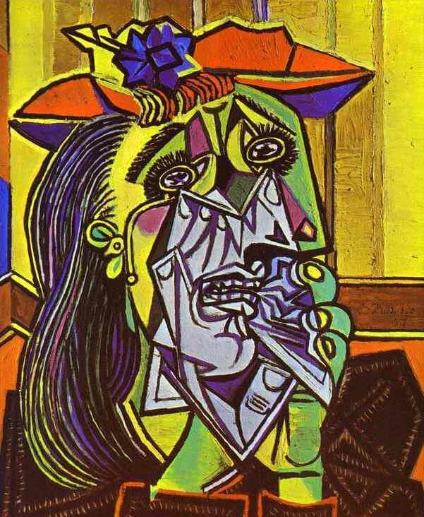

This work, obviously a parody of Henri Matisse's celebrated work Bonheur de Vivre (1905-06), is often read as a celebration of peace. Henri Matisse lyrical work features nubile girls dancing and playing pipes in an idyllic setting as long, sensual curvaceous lines flow through the composition. Picasso's copy is more overtly mythological, featuring with pipe-playing fauns and dancing creatures. However, he captures Matisses's lyricism in the extended swirling lines of the figures, whose forms appear to grow organically like flowers moving upwards towards the Mediterranean sun.

1937
The Weeping Woman
The Weeping Woman series is regarded as a thematic continuation of the tragedy depicted in Picasso's epic painting Guernica. In focusing on the image of a woman crying, the artist was no longer painting the effects of the Spanish Civil War directly, but rather referring to a singular universal image of suffering.

This celebrated work, now in the New York Museum of Modern Art, is part of series painted while was with his young family in the Fontaineblueau in the summer of 1921. It marks a return to high Synthetic Cubism and his enduring Commedia dellArte imaginary, commenced in the early days in Paris. His continuing association with the refined world of ballet, through his wife and through his work designing sets and costumes for Diaghilev, is evident throughout.